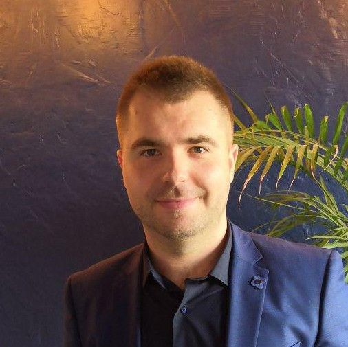
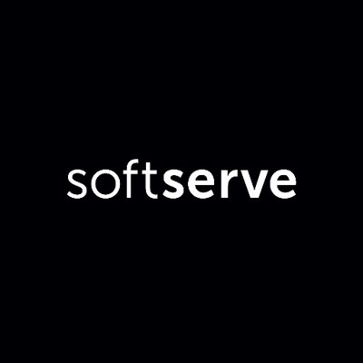
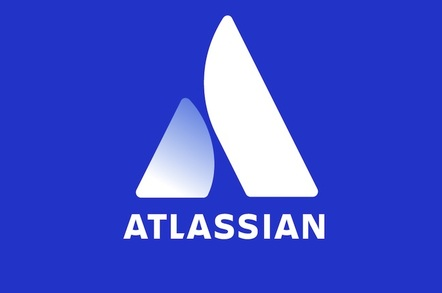

Summary
CV Sergey Moroz,
Automation QA Engineer
 +38(096)397-09-99
+38(096)397-09-99
 sergeymoroz0307@gmail.com
sergeymoroz0307@gmail.com
 sergeymorozgaf
sergeymorozgaf
 sergeymoroz
sergeymoroz
 SergeyMoroz0703
SergeyMoroz0703
Print version (please enable all chapters before)
I have 2 year of experience in software industry as an Automation QC Engineer and about 3
years in software industry in total.
I have carried out test planning, requirements analysis, test design including test cases and checklists, software testing and automated testing. Experienced in backend API, CLI testing.
I have been involved in automated testing of complex web application with numerous events and services. The regression functional tests were automated using Python/WebDriver and related testing tools. English level is Intermediate.
I have carried out test planning, requirements analysis, test design including test cases and checklists, software testing and automated testing. Experienced in backend API, CLI testing.
I have been involved in automated testing of complex web application with numerous events and services. The regression functional tests were automated using Python/WebDriver and related testing tools. English level is Intermediate.
- Education
-
Kiev Polytechnic Institute, Kiev (2009-2015)
Master: Physical Materialize Science
SoftServe IT Academy (2017)
Automation QA Engineering
QATestLab (2012)
QA Engineering
- Skills
-
- Language & Technologies: Python, HTML/CSS, REST API, JSON, XML, Xpath, Git, Docker, Docker-compose
- RDBMS/DBM: PostgreSQL, MySQL, MongoDB
- Methodologies: Agile, Scrum/Kanban, Test Driven Development, Feature Driven Development, Behavior Driven Development
- Frameworks: Pytest, Nose, Behave, Unittest
- Application/Web servers: Nginx, Flask, uWSGI, Asterisk server
- Development Tools: CI/CD: Gitlab, Bamboo, TravisCI, CircleCI. Jira, BitBucket, Confluence, Redmine, Gitlab, PyCharm, Sublime Text
- Testing Tools: Selenium Webdriver, Postman
- Experience
-


Automation QA Engineer
SoftServe, Atlassian (February 2018-till now)- Creating automation test scripts
- Defect tracking and reporting
- Creation CI test plans
- Developing and supporting existing test automation scripts for web application
- Reviewing automation reports and logs
- Working with other Atlassian’s products such as Confluence, Jira, Bamboo, Bitbucket
- PR Code review
- Bug fixes, code development and refactoring
- Creating and supporting Bamboo CI test plans
- CLI Backend testing, API testing
- Working and interacting in Agile Scrum/Kanban environment with teammates
- Participating in meetings with developers for setup process and requirements
- Taking participation in planning meetings, retrospective meetings, grooming
Automation QA Engineer
GoAntiFraud (June 2017-February 2018)- Developing automation test cases, test scenarios
- Manual Web UI testing, manual backend testing
- Writing test documentation
- Writing testing documentation, manual for user's specific development
- Presentation test result and vulnerabilities to team members
- Testing additional client’s feature
- Creation and execution of most common user behavior scenarios
- Testing of Asterisk PBX servers with self-written additional functionality
Head Of Technical Support 3rd line
GoAntiFraud (December 2017-August 2017)- Team Management about 10 people
- Mentoring and training other support teammates
- Writing external project documentation, customer manual etc.
- Creation additional clients features based on Asterisk PBX using Python, Bash, PostgreSQL
- Supporting Unix servers and databases
- Taking participation in investigation of development process
- Updating internal project Wiki and other documentation
- Creating and introduction of Benefits and Penalty system for support department
- Personal qualities
- Team Management (about 10 people)
- Good skills in problem detecting and solving
- Open-minded and goal-oriented
- Good teaching abilities
- Have active teamwork attitude and quick learning ability
- Excellent interpersonal and communicational skills
- Excellent customer service skills
** References available on request